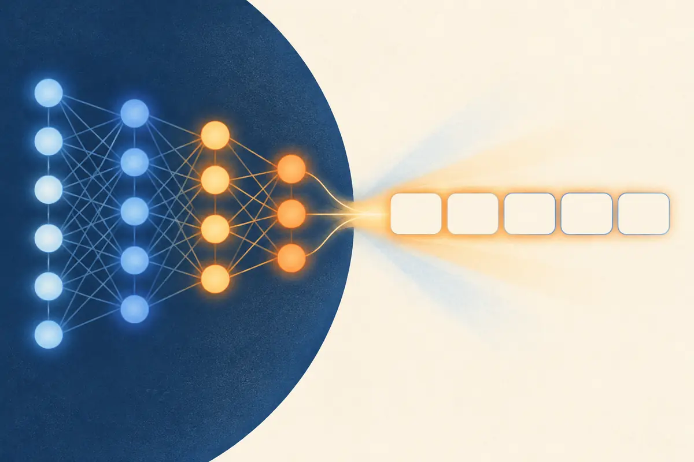

MLPs
A neural network is mostly one small move, repeated: multiply by weights, add a bias, bend. Stack a few layers of that and you get a multilayer perceptron (MLP), the block that holds about two thirds of the weights in each layer of a classic transformer.

By the end you can
- Compute a neuron's output by hand, and write a whole layer as one matrix multiply.
- Explain why stacked layers need a nonlinearity, and what ReLU and GELU do.
- Describe the MLP block inside a transformer: expand ×4, bend, project back.
Guess first. A wrong guess now makes the right answer stick.
You stack ten layers that each just multiply by a matrix (no other operation in between). The result is as expressive as…
- ten times more than one layer
- a network that can fit any function
- a single matrix multiply
- it depends on how wide each layer is
In a GPT-2-style transformer block, roughly what share of the parameters sits in the MLP (rather than in attention)?
- About 10%
- About two thirds
- About half
- Almost none: the MLP has no weights
One neuron: a weighted vote, then a bend
An artificial neuron takes a vector of inputs $x = (x_1, \dots, x_n)$ and does two things:
$$z = w \cdot x + b = \sum_{i=1}^{n} w_i x_i + b, \qquad a = \varphi(z)$$Here $w$ is the neuron's weight vector (one weight per input, saying how much that input counts and in which direction), $b$ is a single bias number that shifts the result, $z$ is the pre-activation, and $\varphi$ (phi) is a fixed nonlinear function called the activation. The output $a$ is one number. The weights and the bias are learned; $\varphi$ is chosen by the designer.
The first part is just the dot product from P1.1: $z$ is large when the input points the same way as the weights. So a neuron is a pattern detector that fires when it sees inputs that look like its weights.
A layer is a matrix multiply
Put $m$ neurons side by side, all reading the same input. Write each neuron's weights as a column, and you get a weight matrix $W$ with $n$ rows and $m$ columns. The whole layer is then one line (treating $x$ as a row vector, as in the attention lesson):
$$h = \varphi(xW + b)$$$x$ is $1 \times n$, $W$ is $n \times m$, the bias $b$ is $1 \times m$, and $\varphi$ is applied to each of the $m$ entries separately. The output $h$ is a new vector of $m$ numbers, the hidden representation. This is why GPUs matter: a layer applied to a whole batch of inputs is one big matrix multiply, exactly the operation GPUs are built for.
Stack two or more such layers and you have a multilayer perceptron (MLP), also called a feed-forward network.
Why the bend matters
Drop $\varphi$ and see what two layers compute:
$$(xW_1 + b_1)W_2 + b_2 \;=\; x\,(W_1W_2) \;+\; (b_1W_2 + b_2)$$That's just $xW + b$ with $W = W_1W_2$ and $b = b_1W_2 + b_2$: a single linear layer. However deep you stack linear layers, the result can only stretch, rotate and shift its input (P1.2). It can never draw a curved decision boundary or compute something like "this and that but not both".
The activation is what lets depth pay off. The two you'll meet most:
- ReLU, $\max(0, z)$: zero for negatives, identity for positives. Cheap, and its gradient is exactly 1 wherever it's active, which made deep networks much easier to train (Nair & Hinton, 2010; Glorot et al., 2011).
- GELU, $z\,\Phi(z)$, where $\Phi$ is the standard normal cumulative distribution function (Hendrycks & Gimpel, 2016). A smooth ReLU: it fades in rather than switching on at 0, and dips slightly below zero (minimum about $-0.17$ near $z = -0.75$). BERT and GPT-2 use GELU.
ReLU vs GELU
Why does "adding bends" give so much power? A layer of ReLU units outputs a sum of hinges, and sums of hinges can trace out any shape:
This is the universal approximation theorem (Cybenko, 1989, for sigmoid units; Hornik, 1991; Leshno et al., 1993, for any non-polynomial activation, ReLU included): a network with one hidden layer and enough units can approximate any continuous function on a bounded region as closely as you like. Two honest caveats. It says nothing about how many units you need (it can be astronomically many), and nothing about whether gradient descent will actually find the right weights. In practice, deeper networks reach the same accuracy with far fewer units, which is one reason models are deep rather than just wide.
Explain like I'm 5
Imagine three rows of animal committees. The first row looks at a picture. Each animal checks for its favourite thing (whiskers, pointy ears, fur) and passes a glowing note forward saying how much it sees it. An animal that sees nothing stays quiet and passes no note at all. That's the ReLU.
The second row reads those notes. Each animal trusts some friends more than others (those are the weights) and writes a new note: "whiskers and pointy ears, so maybe a face?"
The last row combines everything into one decision card: "cat!" Learning means adjusting how much each animal trusts each note.
Where it breaks: real neurons don't usually have a single tidy job like "whiskers". What each one detects is learned, and is often a blend that's hard to name.
Worked example
A ReLU neuron with weights $w = (0.4,\,-0.5,\,0.3)$ and bias $b = 0.1$ sees the input $x = (1,\,2,\,3)$:
- Products: $0.4 \times 1 = 0.4$, $\;-0.5 \times 2 = -1.0$, $\;0.3 \times 3 = 0.9$
- Weighted sum plus bias: $z = 0.4 - 1.0 + 0.9 + 0.1 = 0.4$
- Activation: $a = \max(0,\, 0.4) = 0.4$ ✓
Same kind of neuron, new numbers: $w = (-1,\,0.5,\,0.5)$, $b = 1$, input $x = (3,\,1,\,2)$.
- Weighted sum $w \cdot x =$
- Pre-activation $z = w \cdot x + b =$
- ReLU output $a =$
Now see the collapse with plain numbers. Layer 1 computes $2x + 1$, layer 2 computes $3h - 2$, with no activation in between.
- The pair equals one layer $y = ax + c$ with slope $a =$
- … and intercept $c =$
The MLP block inside every transformer
Each transformer layer (M1.4) has two halves. Attention (M1.1) moves information between tokens. The MLP then processes each token's vector on its own, with the same weights at every position:
$$\mathrm{MLP}(x) = \varphi(xW_{\text{up}} + b_1)\,W_{\text{down}} + b_2$$- Expand: $W_{\text{up}}$ is $d \times 4d$. It maps the token's $d$-dimensional vector up to $4d$ hidden units, so there are many more pattern detectors than input dimensions.
- Bend: apply $\varphi$ (GELU in GPT-2) to each hidden unit.
- Project back: $W_{\text{down}}$ is $4d \times d$, returning to the model width so the result can be added back onto the token's vector.
In GPT-2 small, $d = 768$, so each MLP goes $768 \to 3072 \to 768$. With two $d \times 4d$ matrices the MLP has $8d^2$ weights, against $4d^2$ for attention's four $d \times d$ matrices: about two thirds of each block. One popular reading of what MLPs do is that they act like a big key-value memory, where hidden units fire on particular input patterns and write back associated information (Geva et al., 2021). Treat that as a useful lens, not the full story.
Most current open LLMs (Llama, Qwen, Mistral and others) use a gated variant called SwiGLU (Shazeer, 2020): $\big(\mathrm{SiLU}(xW_1) \odot xW_3\big)W_2$. Here $\odot$ means element-wise multiplication, and $\mathrm{SiLU}(z) = z\,\sigma(z)$, with $\sigma$ the sigmoid, is another smooth ReLU-like curve. There are three matrices instead of two, so the hidden size is often shrunk to about $\tfrac{8}{3}d$, which keeps the cost the same as a $4d$ MLP; many models go somewhat wider (Llama 2 7B: about $2.7d$; Llama 3 8B and Mistral 7B: $3.5d$). The shape of the idea is unchanged: expand, bend, project back.
GPT-2 small: $d = 768$, MLP hidden size $3072$, with biases on both layers.
- Weights in $W_{\text{up}}$ ($768 \times 3072$), in millions:
- Total MLP parameters per block (both matrices plus both biases), in millions:
- With 12 blocks, the MLPs hold this many million parameters (of GPT-2 small's 124M):
Why does a neural network need a nonlinear activation between its layers, and what does that buy you?
What does a single neuron compute?
- $\varphi(x) \cdot w + b$
- $\varphi(w \cdot x + b)$
- $w \cdot x$, with nothing else
- The largest input, $\max_i x_i$
A layer maps 512 inputs to 2048 hidden units: $h = \varphi(xW + b)$ with $x$ a row vector. What shape is $W$?
- $2048 \times 512$
- $512 \times 512$
- $1 \times 2048$
- $512 \times 2048$
Inside a transformer block, which part mixes information between token positions?
- Attention. The MLP processes each position independently with shared weights.
- The MLP. Attention only looks at one token at a time.
- Both mix positions equally.
- Neither: positions never exchange information.
A ReLU unit's input is negative for every example in the batch. During gradient descent (P2.2), what happens to its incoming weights on this batch?
- They get large updates, because the error is large
- They are reset to random values
- They get zero gradient, so they don't change
- They flip sign
Key takeaways
- A neuron computes $\varphi(w \cdot x + b)$: a dot product, a bias, then a nonlinearity.
- A layer is one matrix multiply, $h = \varphi(xW + b)$; an MLP is a stack of such layers.
- Without $\varphi$, stacked layers collapse into one linear map. The bends are what make depth useful.
- ReLU is $\max(0, z)$; GELU is a smooth version. Enough units can approximate any continuous function, but the theorem doesn't say how many or how to find them.
- Every transformer block has an MLP: expand to ~4d, bend, project back, applied to each token separately. It holds most of the parameters.
Add this lesson's cards to your spaced-review deck.